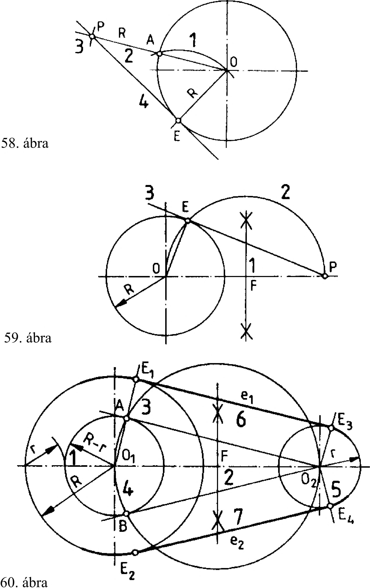

2. Síkmértani szerkesztések 2.4. Körérintő egyenesek, érintőkörök szerkesztése Érintőegyenes szerkesztése körön fekvő pontba Adott: R sugarú kör és E pont (58. ábra) 1. E pontból R=EO rádiusszal ívet rajzolunk, jelöljük az A pontot 2. O, A ponton keresztül egyenest húzunk 3. v4-tól R távolságra jelöljük a P pontot 4. E-P ponton keresztül meghúzzuk az érintőt. Érintőegyenes szerkesztése körön kívül fekvő pontból Adott: R sugarú kör és P pont (59. ábra) 1. Az O-P szakaszra felező merőlegest állítunk, jelöljük az F pontot 2. F pontból R=OF rádiusszal körívet rajzolunk, jelöljük az E pontot 3. E-P ponton keresztül megrajzoljuk az érintőegyenest. Külső érintőegyenes szerkesztése különböző átmérőjű körökhöz Adott: R és r sugarú kör (60. ábra) 1 . R-r sugárral 03 pontból kört rajzolunk 2. 01-02 szakaszra felező merőlegest állítunk, jelöljük az F pontot 3. F pontból R=03F rádiusszal kört rajzolunk, jelöljük az A és B pontot 4. OrA , OrB pontokon keresztül rádiuszt húzunk, jelöljük E3 és £2 pontot 5. O^! ill. OjE2 iránnyal 02 pontból párhuzamost húzunk, jelöljük az E 3 és E4 pontot 6. 02A iránnyal párhuzamosan megrajzoljuk e3 külső érintőt 7. 02B iránnyal párhuzamosan megrajzoljuk e2 külső érintőt Külső érintőkor szerkesztése különböző átmérőjű körökhöz Adott: O] és 02 középponttal Rj és R2 sugarú kör, és a külső érintőkor R3 sugara (61. ábra) 1 . Oj középpontból Rj +R3 sugárral ívet raj zolunk 2. 02 középpontból R2+R3 sugárral ívet rajzolunk, jelöljük az O pontot. 3. O és Oi illetve 02 ponton keresztül egyenest húzunk, jelöljük az £7 és E2 pontokat O pontból R3 sugárral E1 és E2 érintési pontok között ívet húzunk. 61. ábra Belső érintőkor szerkesztése különböző átmérőjű körökhöz Adott: 01 és 02 középponttal Rj és R2 sugarú kör, és a belső érintőkor R3 sugara (62. ábra) 1 . Oj pontból R 3-R 7 sugárral ívet rajzolunk 2. 02 pontból R3-R2 sugárral ívet rajzolunk, jelöljük az O pontot. 3. O és O7 illetve 02 ponton keresztül egyenest húzunk, jelöljük az £7 és E2 pontokat O pontból R3 sugárral E3 és E2 érintési pontok között ívet húzunk. 62. ábra 15
